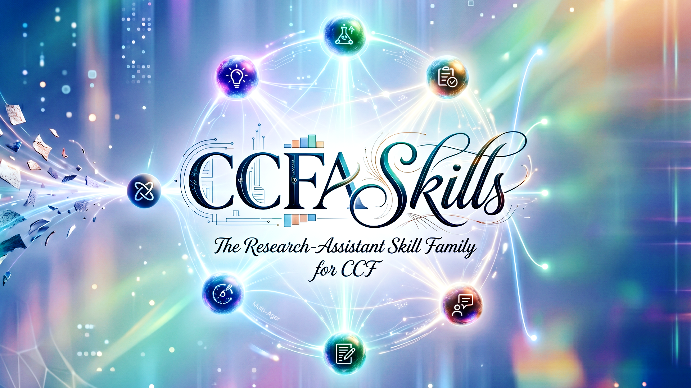

Jiayu Ding
Hi! I am Jiayu Ding (Chinese name: 丁家钰), currently studying at the School of Electronics and Computer Engineering (SECE), Peking University. My research operates at the intersection of Large Language Models (LLMs) and spatial-temporal data, aiming to leverage the structured knowledge and reasoning of LLMs to unlock a deeper, more semantic understanding of complex 3D scenes and dynamic videos.
Detailed Profile (详细个人介绍)
Hi! I am Jiayu Ding (Chinese name: 丁家钰), currently studying at the School of Electronics and Computer Engineering (SECE), Peking University.
My research operates at the intersection of Large Language Models (LLMs) and spatial-temporal data. My goal is to leverage the structured knowledge and reasoning of LLMs to unlock a deeper, more semantic understanding of complex 3D scenes and dynamic videos. I am excited to contribute to building more capable and perceptive AI systems. Recently, my work has been accepted to ACM MM 2026, ECCV 2026, CVPR 2026, and ICML 2026.
Hi！我是丁家钰 (English name: Jiayu Ding)， 北京大学电子与计算机工程学院（SECE）在读研究生。
我的研究聚焦于大语言模型（LLMs）与时空数据的交叉方向，希望借助大模型的结构化知识与推理能力， 实现对复杂三维场景与动态视频更深层、更具语义的理解，从而构建更强大、更具感知力的 AI 系统。 近期工作被 ACM MM 2026、ECCV 2026、CVPR 2026、ICML 2026 等顶级会议接收。
 WeChat
WeChat
News
- 07/2026 🎉 Two papers (CausalSplat, R4DGS) are accepted to ACM MM 2026 !
- 06/2026 🎉 One paper (ZeroSplat) is accepted to ECCV 2026 !
- 04/2026 🎉 One paper (3DSAV) is accepted to ICML 2026 !
- 02/2026 🎉 One paper (ExtrinSplat) is accepted to CVPR 2026 !
Education
-
Present
 Currently studying. Research: LLMs × spatial-temporal understanding (3D scenes & videos).
Currently studying. Research: LLMs × spatial-temporal understanding (3D scenes & videos).
Publications
* Equal contribution. ✉ Corresponding author.
-
CausalSplat: Towards Comprehensive Hierarchical Reasoning in 3D Gaussian SplattingACM MM 2026
-
Dyn-3D: Unveiling and Resolving Ego-Motion Ambiguity in Vision-Language ModelsPreprint 2026
-
LMM-Track4D: Eliciting 4D Dynamic Reasoning in LMMs via Trajectory-Grounded DialoguePreprint 2026
Open Source
-

A skill family for shaping the research storyline of CCF-A papers.
CCFA Skills is a family of 17 specialized AI-agent skills that accompany a research project end-to-end — from idea evaluation, literature search, and experiment design to paper writing, scientific visualization, peer review, rebuttal, and submission. It keeps the research storyline coherent across revisions and works seamlessly with Codex, Claude Code, Cursor, and Gemini CLI. Released under the MIT License.
Contact
Research: I welcome talented researchers to collaborate on meaningful, impactful work at the intersection of LLMs and spatial-temporal understanding.
Entrepreneurship: We aim to train a general-purpose 4D understanding foundation model, and further drive industrial adoption in related domains such as Vision-Language-Action (VLA), Vision-Language Navigation (VLN), and other embodied AI applications.
📧 Email: jyding25@stu.pku.edu.cn